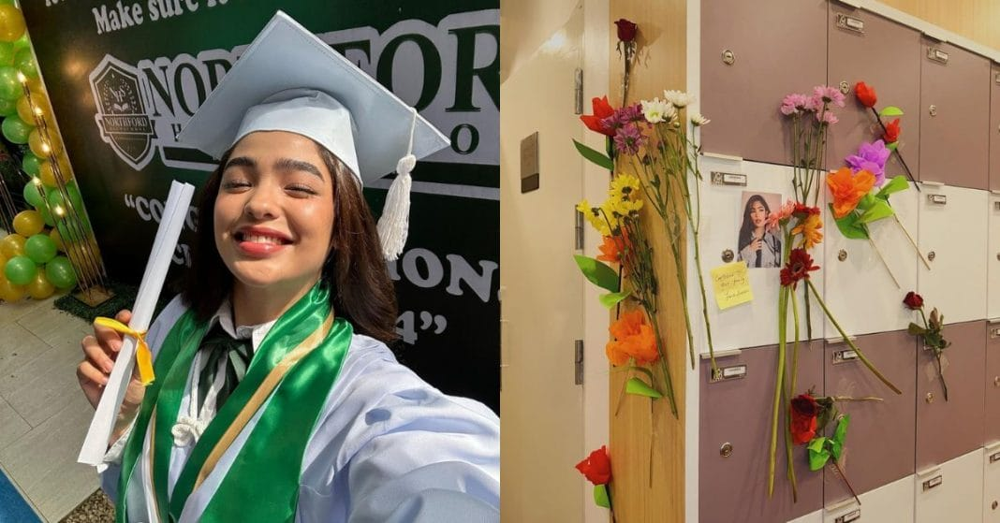
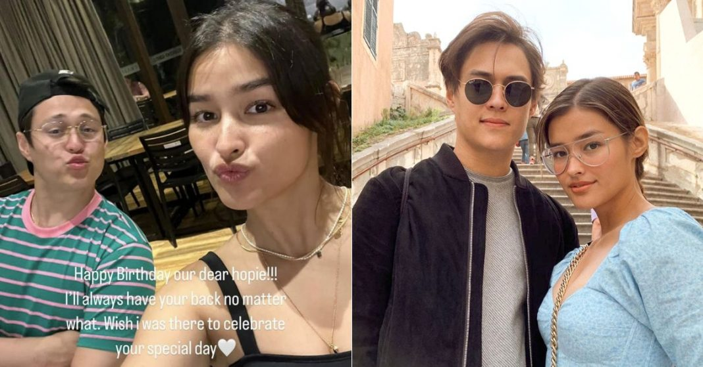

‘Until we meet again’: Andrea Brillantes wraps up role as Sky and Luna in Senior High

Using social media, Andrea Brillantes shared her reflections on her roles as Sky and Luna in the suspense series Senior High on Kapamilya.
On Friday, January 19, the show's final episode aired. It included a "full-circle moment" when veteran actor Mon Confiado's hostile portrayal as Governor Acosta mirrored the murder of his victim, Luna, shown in the first episode of the series.
Andrea wrote a long, heartfelt article expressing her joy and honor at being a part of a program that courageously tackled delicate subjects and increased public awareness of a range of societal concerns.

‘Story na lang?’: Netizens react to Enrique Gil’s birthday message for Liza Soberano
Even after Liza Soberano received a heartfelt birthday message from Enrique Gil, there were still rumors of a separation between the two.
Enrique posted a picture of himself and Liza greeting the actress on her special day on Instagram on Thursday.
The actor’s message read: “Happy Birthday our dear hopie!!! I always have your back no matter what. Wish [I] was there to celebrate your special day.
“Thank you! Forever grateful for you,” he added.
Liza later reposted Enrique’s story with the reply: “Thank you. Forever grateful for you ”.